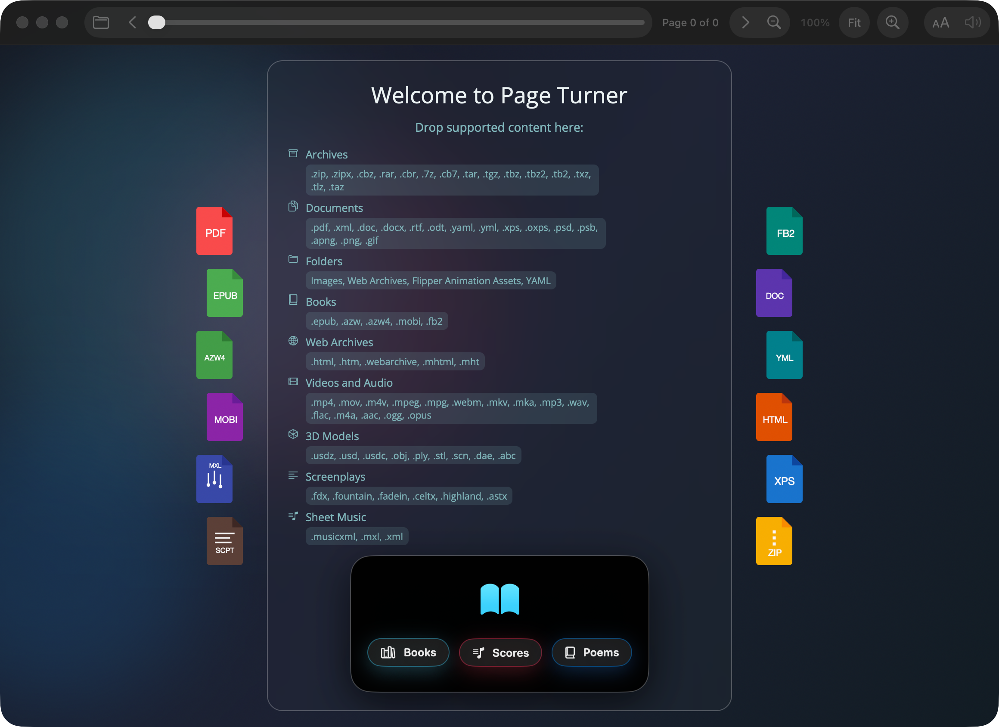

Upcoming App
Page Turner
Page Turner is a native macOS reader for source material that usually gets split across too many tools. It treats books, screenplay files, sheet music, archive-backed page sets, WebM and Matroska media, Photoshop documents, YAML collections, and 3D assets as first-class reading and viewing experiences inside one app.

What Makes PageTurner Different
- One reader spans radically different formats. Page Turner handles ebooks, comics, scripts, scores, media, and model files without forcing each category into a separate app or browser tab.
- Large parts of the stack are native and self-contained. Page Turner includes its own ZIP read/write path, in-process archive extraction for RAR, 7z, and TAR variants, custom readers for Kindle, FB2, XPS, screenplay formats, MusicXML, YAML, and Photoshop, plus dedicated WebM and Matroska playback paths.
- Media features stay local. Video live captions run on-device after installing a Whisper Core ML model into the app, and current video frames can be captured directly to PNG.
- Folders and archives become readable books. Image folders, HTML folders, YAML folders, Flipper Zero animation assets, and many archive types are normalized into ordered page sequences.
What It Reads
- Books and document formats: PDF, EPUB, MOBI, AZW, AZW4, FB2, XPS/OXPS, HTML, WebArchive, MHTML, RTF, RTFD, DOC, DOCX, Word XML, OpenDocument text, YAML, and PPT text extraction.
- Comics and page archives: CBZ, ZIP, ZIPX, CBR, RAR, CB7, 7z, CBT, TAR,
.tar.gz,.tar.bz2,.tar.xz,.tar.lzma,.tar.Z, and the usual shorthand wrappers liketgz,tbz2,txz,tlz, andtaz. - Screenplays: Fountain, Final Draft FDX, Fade In, Celtx, ASTX, and Highland.
- Music and animated visual formats: MusicXML, MXL, APNG, GIF, PSD, PSB, YAML page collections, and Flipper Zero animation folders or ZIPs.
- Media and 3D: standard macOS audio and video formats, native WebM, Matroska video and audio (
.mkv,.mka), and 3D assets such as USD, USDZ, OBJ, PLY, STL, SCN, DAE, and Alembic.
Reader Capabilities
- Searchable bundled libraries for e-books, music scores, and E. E. Cummings poem collections.
- Reader themes, bundled fonts, dark mode, and a switch to respect original document fonts.
- Read-aloud using macOS speech voices with adjustable rate, pitch, volume, and voice selection.
- Built-in MusicXML playback through a native MIDI timeline audio synthesizer.
- Native WebM and Matroska playback, local live captions, volume controls, and frame capture.
- Native 3D preview with orbit controls, rotation shortcuts, and zoom.